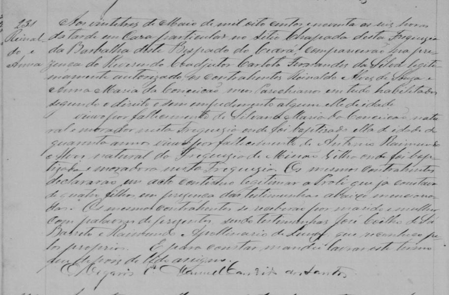

Capitão Reinaldo Alves de Sousa (1840-1910)
No ano de 1840, enquanto o Brasil dava seus primeiros passos como nação independente, muitos acontecimentos marcantes moldavam o curso da história. Foi nesse cenário de transformações que, no dia 12 de maio de 1840, nascia, na cidade de Barbalha-CE, Reinaldo Alves de Sousa, trazendo consigo o futuro e o legado da nossa família.
Reinaldo Alves de Sousa era filho de José Alves de Sousa e Maria Moreira Castro. Seus avós maternos eram Antônio Victorino Nunes e Joaquina Maria da Conceição.
Ele foi batizado na Igreja Matriz de Barbalha no dia 19 de julho de 1840, pelo Padre Manoel Vieira da Silva e seus padrinhos foram Alexandre Moreira de Carvalho e Joaquina Francisca.
“Reinaldo, filho legítimo de José Alves de Sousa e Maria Moreira, nascido a 12 de maio de 1840, batizado solenemente nesta matriz de Barbalha aos 19 de julho do mesmo ano. Foram padrinhos Alexandre Moreira de Carvalho e Joaquina Francisca, moradores desta freguesia.
O Vigário Manoel Vieira da Silva”
Transcrição da página 10 do Livro de Batismos de janeiro de 1840 a junho de 1848 da Igreja matriz da cidade de Barbalha.

Fonte: "Brasil, Ceará, Registros da Igreja Católica, 1725-1971," database with images, FamilySearch (https://familysearch.org/ark:/61903/3:1:9392-9T3W-T4?cc=2175764&wc=MHNM-T68%3A369523901%2C369523902%2C369586901 : 17 May 2022), Barbalha > Santo Antônio > Batismos 1840, Jan-1848, Jun > image 8 of 233; parroquias Católicas, Ceará (Catholic Church parishes, Ceará).
Naquela época, a jovem nação brasileira enfrentava desafios e mudanças políticas. D. Pedro II, com apenas 14 anos, assumia o trono do Brasil após a abdicação de seu pai, D. Pedro I. Com sua ascensão, iniciava-se um período conhecido como "Regência", já que o jovem imperador ainda era menor de idade para governar. Esse momento foi crucial para estabelecer as bases de uma nação em busca de sua identidade e progresso.
Além disso, em 1840, um importante capítulo da história do Brasil se encerrava. A Revolução Farroupilha, também conhecida como Guerra dos Farrapos, chegava ao fim com a assinatura da "Convenção de Sinimbu". O Rio Grande do Sul, que havia lutado durante uma década por sua autonomia, encontrava-se novamente integrado ao país, marcando um momento de reconstrução e pacificação.
No entanto, nem todas as mudanças eram progressistas. Enquanto Reinaldo dava seus primeiros passos, o Brasil ainda vivia sob o regime escravista. O governo regencial intensificava a repressão aos movimentos abolicionistas, proibindo a venda e libertação de escravos. Essa realidade seria desafiada por gerações futuras, inclusive por nossa própria família, que lutaria pela igualdade e pela liberdade de tantos que foram subjugados.
Reinaldo Alves de Sousa era o mais velho de nove irmãos.
Teve pelo menos 13 filhos e 3 esposas.
Casou-se com Sebastiana Maria da Conceição, filha de Saturnino José de Mello e Joana Bezerra de Mello, em Barbalha-CE no dia 2 de junho de 1864 em uma cerimônia realizada pelo Padre João Francisco da Costa Nogueira, tendo como testemunhas Rodrião de Sá Barreto e Luiz Coelho Sampaio.
“Aos dois de junho de mil oitocentos e sessenta e quatro no sítio Caldas desta freguesia de Santo Antônio de Barbalha, exigidas as formalidades, em minha presença e das testemunhas Rodrião de Sá Barreto e Luiz Coelho Sampaio se receberão em matrimônio os nubentes, pardos, digo brancos Rainaldo Alexandre de Sousa¹ filho legítimo de José Alexandre de Sousa² e de Maria Moreira com Sebastiana Maria da Conceição filha legítima de Saturnino José de Mello e Joana Bezerra de Mello e logo lhes dei as bênçãos nupciais: do que para constar mandei fazer este termo que assino. O Vigário João Francisco da Costa Nogueira”
Transcrição da página 187 do Livro de Matrimônios de novembro de 1850 a novembro de 1852 da Igreja matriz da cidade de Barbalha.


Reinaldo e Sebastiana tiveram 6 filhos: Lauro, Severo, Raimundo, Maria Sebastiana, Joaquim e Sebastião
Sebastiana faleceu após o parto do último filho, Sebastião, no dia 15 de fevereiro de 1874.
Por volta do ano de 1878, Reinaldo se casou com Silvana Gonçalves de Sousa, com quem teve apenas um filho, o Monsenhor Francisco Silvano de Sousa.
Silvana faleceu por volta do ano de 1884.
No dia 23 de Maio de 1890 Reinaldo se casou com Ana Maria da Conceição, filha de José Pequeno e Úrsula Ribeiro, em Barbalha - CE em uma cerimônia realizada pelo Padre Carloto Fernandes da Silva tendo como testemunhas José Coelho de Sá Barreto e Raimundo Apolinário de Luna.
“Aos vinte e três de maio de mil oitocentos e noventa as seis horas da tarde em casa particular no sítio chapada desta freguesia da Barbalha deste Bispado do Ceará, compareceram na presença do Reverendo Coadjutor Carloto Fernandes da Silva legitimamente autorizado, os contraentes Reinaldo Alves de Souza e Anna Maria da Conceição ambos parochianos em tudo habilitados segundo o direito e sem impedimento algum elle de idade, , viúvo por falecimento de Silvana Maria da COnceição natural e morador nesta freguesia onde foi batizado ella de idade de quarenta anos viúva por falecimento de Antônio Raimundo Alves natural da freguesia de Missão velha onde foi batizada e moradora nesta freguesia. Os mesmos contraentes declaram em acto contínuo legitimar a Prole que já constava de quatro filhos, em presença das testemunhas abaixo mencionadas. Os mesmos contraentes se receberam por marido e mulher com palavras de presentes, sendo testemunhas José Coelho de Sá Barreto e Raimundo Apollinário de Lina que reconheço pelos próprios. E para constar mandei lavrar esse termo que assino. O Vigário Manuel Candido dos Santos”
Transcrição da página 73 do Livro de Matrimônios de setembro de 1888 a setembro de 1891 da Igreja matriz da cidade de Barbalha.
Reilnaldo e Ana tiveram 6 filhos: Antônia, André, Jerônimo, Tereza, Joséfa e Antônio Reinaldo.
Reinaldo faleceu aos 70 anos no dia 27 de novembro de 1910 no sítio Chapada em Barbalha em consequência de lesão cardíaca.
“Aos 27 de novembro de mil novecentos e dez as duas horas da manhã no sítio Chapada desta freguesia de Barbalha Bispado do Ceará, faleceu em consequência de lesão-cardíaca Reinaldo Alves de Souza casado que era com Anna Alves da Conceição. Com idade de setenta e um anos. Seu cadáver amortalhado em hábito branco, foi depois de encomendado sepultado no cemitério público desta cidade. E para constar mandei com autorização diocesana lavrar este termo que assigno. O Vigário Antonio Jatahy de Souza”
Transcrição da página 112 do Livro de óbitos de agosto de 1908 a março de 1910 da Igreja matriz da cidade de Barbalha.

¹ Ao se casar com Sebastiana Maria da Conceição, não se sabe o motivo mas, Reinaldo Adotou o nome Reinaldo Alexrandre de Sousa
² No Casamento de Reinaldo e Sebastiana, o pai de Reinaldo adotou o nome José Alexandre de Sousa.